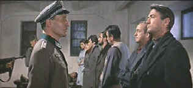
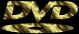

| The
Guns of Navarone (SE)/B+,B+ |
| Columbia/1961/157/ANA
2.35 |
The pleasure of re-visiting The Guns of Navarone on DVD
is like getting a visit from an old friend and reminiscing
about good times past. The great news is that this sure-fire
adventure flick looks great in this anamorphic widescreen
presentation in a special edition from Columbia.
The
heroic World War II thriller takes a diverse group of Allied
specialists up a Greek mountainside in a desperate attempt to
blow up a pair of enormous German guns that control the waters
through which an British evacuation convoy must pass. The
dramatics are mostly high level comic book in style, and
situations are often addressed beyond the bounds of belief, but
nevertheless, The Guns of Navarone rises above the crest of its
mountain to provide rousing entertainment.
 |
| Face
to face with the enemy. ©Columbia |
Gregory Peck plays Captain Mallory, the stalwart leader of the
commando group. Peck's presence always lends authority and
stability to a film and so it does here. David Niven,
brings a nice sense of humor to his World War II assignment an
explosive specialist. He does get the tough task of making some
bombastic speeches and many of the references to his character
are indicative of a younger man. When Peck blows steam off
at Niven and calls him son, it's difficult to ignore the fact
that Niven is Peck's senior by six years and look more like his
father than his son. But Niven does get the job done. Anthony
Quinn provides excellent balance to the unit with his no
nonsense approach to character as Colonel Stavros and he and
Irene Papas, playing a resistance fighter, provide the
only semblance of romance to the pure adventure nature of the
film. Peck's tender moments with Gia Scala, on the other hand,
seem forced. Rounding out the group are Stanley Baker as
Butcher Brown, a soldier who shows surprising reluctance with a
knife, considering he was chosen for the mission because of his
prowess. James Darren gets to sing a few bars in the wedding
scene as the young Greek man returning to his homeland. Anthony
Quayle sweats a lot and keeps a stiff upper lip as the initial
mission leader Major Franklin.
The pacing of the film is for the most
part excellent and the few slow moments of the long film are
worth slogging through to get to the tension filled climax.
J. Lee Thompson does good workmanlike directing duty on The
Guns of Navarone. He manages to keep the action flowing
crisply through the more than two and a half hour running time.
Dimitri Tiomkin's score gives able accompaniment to the images
of cinematographer Oswald Morris. Carl Foreman wrote the script
and produced the film.
The special edition includes a tepid
remembrance documentary that features comments from Peck, Quinn,
Darren and director Thompson. There are also four promo short
running less than five minutes each that offer a varied amount
of charm while watching Pappas and Scala shopping in Rhodes, or
Darren honeymooning with his new bride on location. Director J.
Lee Thompson provides an audio commentary that is often
repetitious. Details of the guns are interesting, but he often
simply focuses on specifying locales and how the scenes were
composed. He does express his dislike of story-boarding and
relates the tale of David Niven's almost disastrous illness
several times in the course of a few minutes. Still, Thompson is
willing to stoke the fires of memory to try and come up with
some additional light on the making of The Guns of Navarone
and we must appreciate having a record of his memories on this
enjoyable special edition.
The DVD presents the film in the best
video clothes I have ever seen it. The color is consistently
lively, especially considering the cold palette used by the
filmmakers, and the images are almost all sharp. There are
a few shots slightly soft and a few that are a tad overenhanced,
but it seems like whichever way the colorist chooses to transfer
the film he is in for some criticism. Overall the choices are
good and make The Guns of Navarone DVD look as good as it can.
The Dolby Digital 5:1 surround is clean and the music has nice
space around it. There isn't a great deal of bass to the
explosions, but the visual fireworks provide the best show. The
surrounds get a smattering of debris sounds and the storm waters
crash reasonably effectively on the boat decks. |
|

The
Movie Poster Archive include extensive poster images from the
films of stars like Susan Hayward, Kirk Douglas, Katharine
Hepburn and many more. This month's featured star is
Gregory
Peck

Doug Pratt's been doing almost longer than anyone in the business,
reviewing laser discs, that is, and now DVDs too. The venerable
Laserdisc Newsletter has been publishing since 1984. Pratt probably
has a large enough stock of laser discs in his house to build a
DVD-proof bomb shelter. Check out his on-line reviews at DVDlaser.com.

A great place for movie lovers and
techies to visit for exchange of ideas. New speedy interface is an
inspiration for more dialogue.
A hallmark of Film Threat Magazine is irreverence. The transition
from print to the Internet leaves the acid base in tact. Humorous
criticism with a vengeance.
The Cinema Laser
A home grown magazine for laserphiles that has been publishing for a
number of years and has embraced DVD in a big way. Lots of helpful
information.
Graphic
Expectations is an excellent resource for large 47 x 63"
French movie posters.
 DVD
Gold
specializes in Region 2 films, and spins gold about the latest
DVD releases in England and elsewhere. Check out the new site.
Black
DVD Online is a new site
dedicated to black film content on DVD. The commendable enterprise
is hosted by Webmaster Samuel L. McLemore, Jr. and presented in an
attractive interface
The Digital Ring
has DVD reviews and theatrical release reviews as well. Check
out their DVD site of the month feature. Currently, they are
running an interview with DVD
Verdict's Sean McGinnis
|